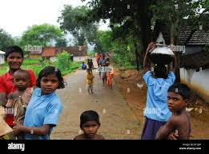

Department of English (P.G)
Debra Thana Sahid Kshudiram Smriti Mahavidyalaya Autonomus
Introduction This website presents a field survey–based academic study on the Ho community, conducted as part of the postgraduate curriculum of the Department of English (P.G), Debra Thana Sahid Kshudiram Smriti Mahavidyalaya Autonomus. The primary objective of this project is to document and analyze the cultural, social, linguistic, and ritual practices of the Ho people through direct fieldwork and community interaction. The study explores the historical background, geographical distribution, folk traditions, language, kinship system, rituals, musical instruments, and the impact of modern influences on the cultural identity of the Ho community. Special attention has been given to understanding how the younger generation negotiates between traditional values and contemporary cultural influences, particularly in regions where the community interacts with dominant cultural groups. This website has been designed as a static academic resource to systematically present the collected data in a structured and accessible manner. It serves not only as a record of field-based research but also as a medium to preserve and showcase the rich cultural heritage of the Ho community. Through this project, an effort has been made to contribute to the broader discourse on indigenous cultures, oral traditions, and cultural preservation in the modern era.
